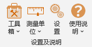

Ribbon菜单Word 格式助手中如下图所示部分可对本程序的默认设置进行更改：
为Word提供的一些便捷工具，详细功能见工具箱章节
可以更改Word的测量单位，更改后，Word文档界面的标尺及相关的界面单位将改变，该项设置仅针对显示，不改变实际的内容尺寸。
可调出设置窗口，设置窗口为Word内置边侧栏，更改时即保存，且不随Word的关闭重置，默认设置将保存至硬盘，下次开启Word时依然生效。
在本程序各功能设置窗口激活的状态下，按F1键可直接定位当前功能的帮助页面。

本程序中需要应用页边距时，如应用默认页边距，则采用此处设置的数值。
文字距离分隔线的间距分为紧凑、适中、宽松三种，以调节不同字体与分隔线之间的外观表现。
本程序中需要对列表设置格式时，如应用默认设置，则采用此处设置的数值。缩进值的设置参考列表与多级列表功能相关说明。
从Ribbon菜单中快速为表格添加外框时，所采用的线型和线宽，由此设置给定。
本程序所有针对图片格式的操作，均受此处类型选择的限制。
图片及链接的图片指单纯外部插入的图片文件，如各类照片等，同时又区分嵌入行内的与浮置于文字的情况；同时本程序的图片格式可以应用于Word内创建的图表（如折线图、饼图、柱状图等）以及SmartArt图形（如关系图、流程图等）；另外，如果Word内部创建的各类图形（如线条、矩形、圆形等各种形状）进行了组合，也可以将其应用本程序的格式。
各项参数的意义与功能参考二维码功能说明，从Ribbon菜单按钮直接创建二维码时，则采用此处的参数设置。
将本界面中所有的设置恢复为程序最初的设置。
本界面设置将会保存到电脑，在后续程使用中均生效；由于浮置于文字的图片、图形对文件格式的影响较大，对于全文应用前需谨慎。